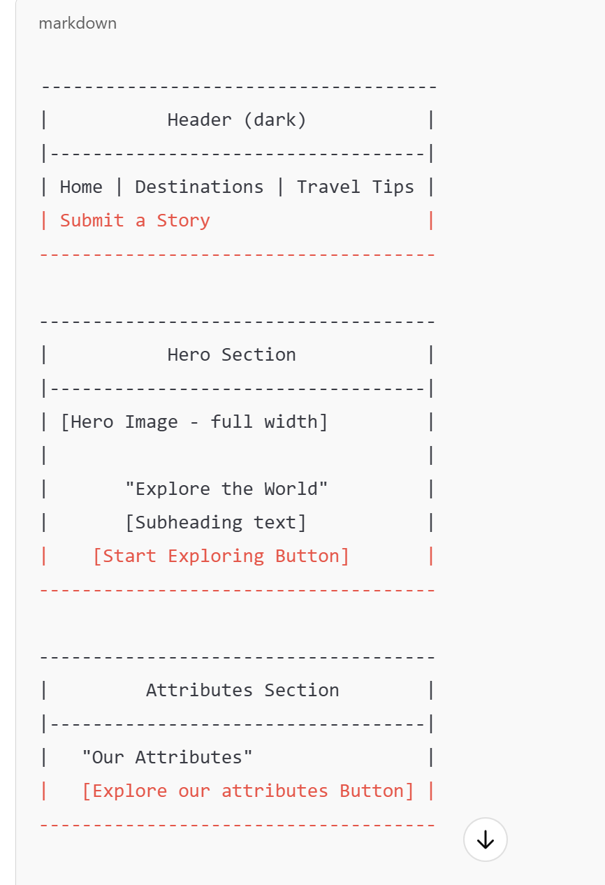

Project Subject
A Travel Blog focusing on Destination Guides and Travel Tips.
Project Description
The website will feature destination guides for popular travel locations, travel tips for budget-friendly adventures, and a gallery showcasing beautiful landscapes. The site will include a blog section for personal travel stories and a form for visitors to submit their own stories. It will also use a weather API to provide real-time weather updates for featured destinations.
Project Reason and Purpose
I chose this subject because of my personal interest in travel and the opportunity to engage a broad audience with valuable content. The project allows me to integrate dynamic web development skills, such as API integration, JavaScript functionality, and responsive design, while inspiring others to explore new places.
Scenarios
Scenarios represent questions from potential site visitors, guiding the content toward addressing the needs of the target audience. Examples include:
- What are the top budget-friendly destinations in Abuja?
- How can I find real-time weather information for my next travel location?
Color Schema
- Primary Dark Color (#333): Used for header and footer backgrounds.
- Accent Color (#e04e29): Used for heading elements and hover states.
- Button Color (#ff5733): Used for primary buttons, transitions to #e04e29 on hover.
- Background Light Color (#f4f4f4): Used for the body background.
- Text Color (#333): General body text for readability.
- Highlight Background Color (Red): Used in highlights for emphasis.
- Secondary Light Background (#f9f9f9): Background color in scenarios section.
- Secondary Button Color (#090b0a): Used for call-to-action buttons.
- Secondary Background Light Blue (#f0f8ff): Background color in call-to-action.
Typography
Primary Font Family - Roboto: Applied to general text throughout the website for readability.
Secondary Font Family - Arsenal SC: Used for headings and emphasized text, especially <h1> elements.
Wireframe
This section includes sketches for mobile and desktop views, which structure content as outlined in the summaries. The desktop view uses side-by-side sections, while the mobile view is single-column.
